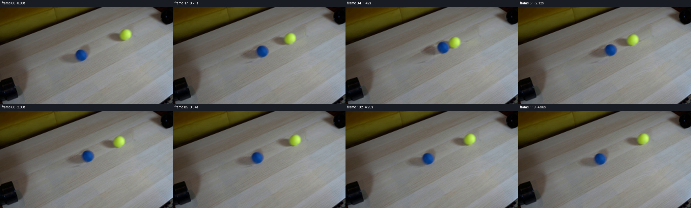
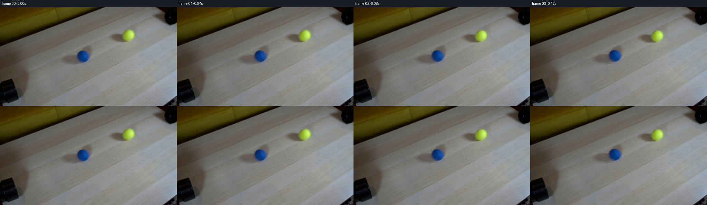

CODING AGENTS AS PIXEL WORLD MODELS
traex/GPT-6.1-Sol · 0031
点击播放 · 原生 RGB 像素
逐轮保存的候选
回放视频、检查图与代码变化。
每份候选均可单独播放。实际图片检查记录在下方工具轨迹中。
候选 01播放与检查图
点击播放 · 原生 RGB 像素


展开代码变化
--- 上一保存版本
+++ 本次保存版本
@@ -0,0 +1,211 @@
+"""Deterministic, source-pixel animation of an equal-mass rolling collision.
+
+Only the provided still is used. The wood is continued along its measured
+local grain direction. Balls, soft silhouettes, and their cast shadows are
+transported from the source; fine surface detail turns with the rolling sphere.
+"""
+from pathlib import Path
+import numpy as np
+from PIL import Image
+from scipy.ndimage import map_coordinates, distance_transform_edt, gaussian_filter
+import artifact_io
+
+ROOT = Path(__file__).resolve().parent
+FPS = 24
+NFRAMES = 120
+
+
+def ellipse_field(x, y, cx, cy, a, b, angle):
+ ca, sa = np.cos(angle), np.sin(angle)
+ u, v = x-cx, y-cy
+ return np.sqrt(((ca*u+sa*v)/a)**2+((-sa*u+ca*v)/b)**2)
+
+
+def clean_table(image):
+ """Fill only the two occluded tabletop islands; preserve every other pixel."""
+ height, width = image.shape[:2]
+ y, x = np.mgrid[:height, :width]
+ fb = np.minimum(np.hypot(x-241.0, y-143.4)/22,
+ ellipse_field(x,y,209,151.0,49,17,-.17))
+ fy = np.minimum(np.hypot(x-371.0, y-82.0)/22,
+ ellipse_field(x,y,340,88.2,49,17,-.17))
+ mask = np.minimum(fb, fy) < 1
+ yy, xx = np.where(mask)
+ distances = []
+ for sign in [-1, 1]:
+ dist = np.zeros(len(xx))
+ remaining = np.ones(len(xx), dtype=bool)
+ for step in range(1,180):
+ ids = np.flatnonzero(remaining)
+ if not len(ids):
+ break
+ xn, yn = xx[ids]+sign*step, yy[ids]-.55*sign*step
+ valid = (xn>=0)&(xn<width)&(yn>=0)&(yn<height)
+ covered = map_coordinates(mask.astype(float), [yn,xn],
+ order=0, mode='nearest')
+ done = valid & (covered < .5)
+ dist[ids[done]] = step
+ remaining[ids[done]] = False
+ dist[remaining] = 179
+ distances.append(dist)
+ samples=[]
+ for sign, dist in zip([-1,1], distances):
+ values=[]
+ for extra in range(5):
+ xn, yn = xx+sign*(dist+extra), yy-.55*sign*(dist+extra)
+ values.append(np.stack([map_coordinates(image[:,:,c], [yn,xn],
+ order=1, mode='nearest') for c in range(3)], -1))
+ samples.append(np.mean(values,axis=0))
+ fraction=(distances[0]/(distances[0]+distances[1]))[:,None]
+ filled=samples[0]*(1-fraction)+samples[1]*fraction
+ fade=np.minimum(distance_transform_edt(mask)/4,1)[yy,xx,None]
+ result=image.copy()
+ result[yy,xx]=image[yy,xx]*(1-fade)+filled*fade
+ rng=np.random.default_rng(18)
+ result[yy,xx]+=rng.normal(0,.8,(len(xx),1))*fade
+ return result
+
+
+class Ball:
+ def __init__(self, image, background, center, radius, box):
+ self.center=np.asarray(center, dtype=float)
+ self.radius=radius
+ self.x0,self.y0,self.x1,self.y1=box
+ self.rgb=image[self.y0:self.y1,self.x0:self.x1].copy()
+ bg=background[self.y0:self.y1,self.x0:self.x1]
+ self.h,self.w=self.rgb.shape[:2]
+ self.yy,self.xx=np.mgrid[self.y0:self.y1,self.x0:self.x1].astype(float)
+ self.u=(self.xx-center[0])/radius
+ self.v=(self.yy-center[1])/radius
+ rr=np.hypot(self.u,self.v)
+ # Photographic antialiasing and slightly defocused fuzzy edge.
+ self.alpha=np.clip(.5+(radius-rr*radius)/1.8,0,1)
+ residual=self.rgb-bg
+ self.shadow=residual*(1-self.alpha[:,:,None])
+ self.premult=residual+self.alpha[:,:,None]*bg-self.shadow*(1-self.alpha[:,:,None])
+ detail=self.rgb-gaussian_filter(self.rgb, sigma=(1.05,1.05,0))
+ self.detail=np.clip(detail,-6,6)
+ self.detail_fade=np.clip((.86-rr)/.18,0,1)*self.alpha
+ self.normals=np.stack([self.u,self.v,np.sqrt(np.maximum(0,1-rr*rr))],-1)
+ self.base_texture=self.sample_detail(self.normals)
+
+ def sample_detail(self, normals):
+ # Back-hemisphere fine fuzz is continued from the observed hemisphere.
+ u,v=normals[:,:,0],normals[:,:,1]
+ radius=np.hypot(u,v)
+ factor=np.minimum(1,.81/np.maximum(radius,1e-6))
+ sx=self.center[0]+self.radius*u*factor-self.x0
+ sy=self.center[1]+self.radius*v*factor-self.y0
+ return np.stack([map_coordinates(self.detail[:,:,c],[sy,sx],order=1,
+ mode='nearest') for c in range(3)],-1)
+
+ def rotating_premult(self, angle, direction):
+ ax=np.array([-direction[1],direction[0],0.0])
+ # Inverse rigid rotation maps the current visible surface to its material.
+ ca,sa=np.cos(-angle),np.sin(-angle)
+ n=self.normals
+ rotated=n*ca+np.cross(ax,n)*sa+ax*np.sum(n*ax,-1)[:,:,None]*(1-ca)
+ shifted=self.sample_detail(rotated)
+ return self.premult+(shifted-self.base_texture)*self.detail_fade[:,:,None]*.75
+
+ def warped(self, displacement, squash, direction):
+ center=self.center+displacement
+ reach=max(self.w,self.h)+5
+ x0=max(0,int(np.floor(center[0]-reach)))
+ x1=min(512,int(np.ceil(center[0]+reach)))
+ y0=max(0,int(np.floor(center[1]-reach)))
+ y1=min(288,int(np.ceil(center[1]+reach)))
+ y,x=np.mgrid[y0:y1,x0:x1].astype(float)
+ # Shadows translate, but do not deform at impact.
+ sx=x-displacement[0]-self.x0
+ sy=y-displacement[1]-self.y0
+ shadow=np.stack([map_coordinates(self.shadow[:,:,c],[sy,sx],order=1,
+ mode='constant',cval=0) for c in range(3)],-1)
+ dx=x-center[0];dy=y-center[1]
+ along=dx*direction[0]+dy*direction[1]
+ across=-dx*direction[1]+dy*direction[0]
+ along=along/squash
+ across=across*np.sqrt(squash)
+ sx=self.center[0]+along*direction[0]-across*direction[1]-self.x0
+ sy=self.center[1]+along*direction[1]+across*direction[0]-self.y0
+ alpha=map_coordinates(self.alpha,[sy,sx],order=1,mode='constant',cval=0)
+ angle=np.dot(displacement,direction)/self.radius
+ texture=self.rotating_premult(angle,direction)
+ premult=np.stack([map_coordinates(texture[:,:,c],[sy,sx],order=1,
+ mode='constant',cval=0) for c in range(3)],-1)
+ return (slice(y0,y1),slice(x0,x1)),shadow,alpha,premult
+
+
+def generate():
+ image=np.array(Image.open(ROOT/'first_frame.png').convert('RGB'))
+ assert image.shape==(288,512,3)
+ original=image.astype(np.float64)
+ background=clean_table(original)
+ blue=Ball(original,background,(241,143.4),18.3,(153,105,269,177))
+ yellow=Ball(original,background,(371,82),18.1,(284,47,399,115))
+ d=yellow.center-blue.center
+ separation=np.linalg.norm(d)
+ direction=d/separation
+ speed=38.0
+ restitution=.78
+ rolling_deceleration=8.5
+ contact_duration=.060
+ approach=(separation-blue.radius-yellow.radius)/2
+ contact_time=approach/speed
+ rebound_time=contact_time+contact_duration
+ rebound_speed=speed*restitution
+
+ def state(t):
+ if t<contact_time:
+ return speed*t,1.0,1.0
+ if t<rebound_time:
+ u=(t-contact_time)/contact_duration
+ # Hermite elastic compression, with equal and opposite impulses.
+ compression=speed*contact_duration*(u-(2-restitution)*u*u+(1-restitution)*u*u*u)
+ return (approach+compression,
+ 1-compression/blue.radius,1-compression/yellow.radius)
+ tau=min(t-rebound_time,rebound_speed/rolling_deceleration)
+ outward=rebound_speed*tau-.5*rolling_deceleration*tau*tau
+ return approach-outward,1.0,1.0
+
+ def render(t):
+ inward,bs,ys=state(t)
+ layers=[yellow.warped(-inward*direction,ys,-direction),
+ blue.warped(inward*direction,bs,direction)]
+ canvas=background.copy()
+ # Cast shadows lie on the tabletop; draw all before the solid spheres.
+ for region,shadow,alpha,premult in layers:
+ canvas[region]+=shadow
+ # The lower ball is nearer the locked camera.
+ for region,shadow,alpha,premult in layers:
+ canvas[region]=canvas[region]*(1-alpha[:,:,None])+premult
+ return np.clip(canvas,0,255)
+
+ frames=np.empty((NFRAMES,288,512,3),dtype=np.uint8)
+ frames[0]=image
+ # Short shutter interval at an unchanging 24fps; no time remapping.
+ for i in range(1,NFRAMES):
+ t=i/FPS
+ accum=sum(render(t+offset) for offset in [-.006,0,.006])/3
+ frames[i]=np.rint(accum).astype(np.uint8)
+ artifact_io.save(frames,ROOT)
+ # An ordinary playable video is also convenient, in addition to the required
+ # lossless RGB tensor, PNG frames and self-contained player.
+ try:
+ import cv2
+ writer=cv2.VideoWriter(str(ROOT/'video.mp4'),cv2.VideoWriter_fourcc(*'mp4v'),
+ FPS,(512,288))
+ if writer.isOpened():
+ for frame in frames:
+ writer.write(np.ascontiguousarray(frame[:,:,::-1]))
+ writer.release()
+ except (ImportError,RuntimeError):
+ pass
+ print('Saved',frames.shape,'RGB frames at',FPS,'fps.')
+ print(f'First contact: {contact_time:.4f}s; equal incoming speed {speed:.2f}px/s.')
+ print(f'Both balls settle at {rebound_time+rebound_speed/rolling_deceleration:.4f}s.')
+ assert np.array_equal(frames[0],image)
+
+
+if __name__=='__main__':
+ generate()
可观测工具轨迹
实际执行的命令与返回图片。
命令 1exit 0
/bin/bash -lc 'ls -la && cat prompt.txt && cat GENERATION_RULES.md'
命令 2exit 0
/bin/bash -lc "cat task_spec.json && cat artifact_io.py && python - <<'PY'
from PIL import Image
import numpy as np
im=np.array(Image.open('first_frame.png'))
print('shape',im.shape)
print('range',im.min((0,1)),im.max((0,1)))
for y in range(0,288,12):
print(y, ['%d,%d,%d'%tuple(np.mean(im[y:y+12,x:x+16,:3],axis=(0,1))) for x in range(0,512,16)])
PY"命令 3exit 0
/bin/bash -lc "python - <<'PY'
import numpy as np
from PIL import Image
im=np.array(Image.open('first_frame.png')).astype(float)
# color points
blue=(im[:,:,2]>im[:,:,0]*1.5)&(im[:,:,2]>im[:,:,1]*1.3)&(im[:,:,2]>70)
yellow=(im[:,:,0]>60)&(im[:,:,1]>im[:,:,2]*1.6)&(im[:,:,0]>im[:,:,2]*1.6)&(im[:,:,1]>im[:,:,0]*.9)
from scipy.ndimage import label
for name,mask in [('blue',blue),('yellow',yellow)]:
labels,n=label(mask)
for i in range(1,n+1):
y,x=np.where(labels==i)
if len(x)>10:print(name,len(x), (x.min(),y.min(),x.max(),y.max()), (x.mean(),y.mean()))
a=np.array(Image.open('first_frame.png').resize((128,72))).astype(float)
chars=' .:-=+*#%@'
print('ASCII: B blue Y yellow W wood N black')
for row in a:
out=''
for r,g,b in row:
if b>r*1.5 and b>g*1.3 and b>70: c='B'
elif r>80 and g>b*1.6 and r>b*1.6 and g>r*.9:c='Y'
else:c=chars[min(9,int((r+g+b)/3/256*10))]
out+=c
print(out)
PY"命令 4exit 0
/bin/bash -lc "python - <<'PY'
from PIL import Image
import numpy as np
im=np.array(Image.open('first_frame.png')).astype(float)
# Detailed crop as brightness-ascii and color markers
for box in [(190,106,274,173),(325,48,405,112),(0,170,108,288),(420,0,512,72)]:
x0,y0,x1,y1=box
a=np.array(Image.fromarray(im.astype('uint8')).crop(box).resize(((x1-x0)//2,(y1-y0)//2))).astype(float)
print('\\nCROP',box)
for row in a:
s=''
for r,g,b in row:
if b>r*1.5 and b>g*1.3 and b>70:c='B'
elif r>95 and g>b*1.6 and r>b*1.6 and g>r*.9:c='Y'
else:c=' .:-=+*#%@'[min(9,int((r+g+b)/3/256*10))]
s+=c
print(s)
# radial color profiles centers
for cen in [(241,143),(371,82)]:
x,y=cen
print('\\n',cen)
for dy in range(-23,24,3):
print(dy,[tuple(im[y+dy,x+dx].astype(int)) for dx in range(-24,25,4)])
PY"命令 5exit 0
/bin/bash -lc "python - <<'PY'
import numpy as np
from PIL import Image
from scipy.ndimage import gaussian_filter
im=np.array(Image.open('first_frame.png')).astype(float)
g=im.mean(2)
# print correlation vectors for grain
for dx in [10,20,30,40,60]:
scores=[]
for dy in range(-60,61):
a=g[170:220,150:360]; b=g[170+dy:220+dy,150+dx:360+dx]
a=a-gaussian_filter(a,6); b=b-gaussian_filter(b,6)
scores.append((np.corrcoef(a.ravel(),b.ravel())[0,1],dy))
print(dx,sorted(scores,reverse=True)[:5])
# Edge around objects radial discriminance and alpha
for cx,cy in [(241,143),(371,82)]:
print('ball',cx,cy)
for y in range(cy-21,cy+23):
s=''
for x in range(cx-23,cx+24):
r,g,b=im[y,x]
if b>r*1.5 and b>g*1.3 and b>60:c='B'
elif g>b*1.7 and r>b*1.5 and r>70 and g>r*.95:c='Y'
else:c=' .:-=+*#%@'[min(9,int((r+g+b)/3/256*10))]
s+=c
print(y,s)
PY"命令 6exit 0
/bin/bash -lc "python - <<'PY' import importlib.util for m in ['scipy','cv2','imageio']: print(m,importlib.util.find_spec(m) is not None) PY which ffmpeg || true"
命令 7exit 0
/bin/bash -lc "cat > .tmp/analyze_bg.py <<'PY'
import numpy as np
from PIL import Image
from scipy.ndimage import map_coordinates, gaussian_filter, distance_transform_edt
im=np.array(Image.open('first_frame.png')).astype(float)
h,w=im.shape[:2]; Y,X=np.mgrid[:h,:w]
# sphere mask and shadow envelope
B=((X-241)**2+(Y-143.5)**2<21**2)
Q=((X-371)**2+(Y-81.9)**2<21**2)
def ellipse(cx,cy,a,b,ang):
c=np.cos(ang);s=np.sin(ang);x=X-cx;y=Y-cy
return ((c*x+s*y)/a)**2+((-s*x+c*y)/b)**2<1
bs=ellipse(218,148,43,15,-.24)
ys=ellipse(347,87,42,15,-.24)
mask=B|Q|bs|ys
# interpolate across holes in grain coordinates
coords=np.where(mask);yy,xx=coords
n=len(xx); dm=np.zeros(n);dp=np.zeros(n)
for sign,dist in [(-1,dm),(1,dp)]:
remaining=np.ones(n,bool)
for step in np.arange(1,140):
ids=np.flatnonzero(remaining)
if not len(ids):break
xn=xx[ids]+sign*step; yn=yy[ids]-.55*sign*step
valid=(xn>=0)&(xn<w)&(yn>=0)&(yn<h)
mk=map_coordinates(mask.astype(float),[yn,xn],order=0,mode='nearest')
found=valid&(mk<.5)
dist[ids[found]]=step
remaining[ids[found]]=False
dist[remaining]=139
samples=[]
for sign,dist in [(-1,dm),(1,dp)]:
vals=[]
for offset in [0,1,2,3]:
xn=xx+sign*(dist+offset);yn=yy-.55*sign*(dist+offset)
vals.append(np.stack([map_coordinates(im[:,:,c],[yn,xn],order=1,mode='nearest') for c in range(3)],axis=1))
samples.append(np.mean(vals,0))
a=(dm/(dm+dp))[:,None]
out=im.copy(); out[yy,xx]=samples[0]*(1-a)+samples[1]*a
# mild granular texture
rng=np.random.default_rng(18);noise=rng.normal(0,1.0,(h,w,1))
f=distance_transform_edt(mask);amp=np.minimum(f/4,1)
out+=noise*amp[:,:,None]
print('probes original/background')
for x,y in [(240,122),(252,120),(200,147),(220,149),(184,150),(243,165),(334,83),(336,89),(350,97),(371,102),(370,60),(356,73),(259,143),(285,120)]:
print((x,y),im[y,x].astype(int),out[y,x].round().astype(int))
np.save('.tmp/background.npy',out)
np.save('.tmp/mask.npy',mask)
PY
python .tmp/analyze_bg.py"命令 8exit 0
/bin/bash -lc "python - <<'PY'
from PIL import Image
import numpy as np
im=np.array(Image.open('first_frame.png')).astype(float)
bg=np.load('.tmp/background.npy')
for y,xa,xb in [(140,155,280),(149,155,280),(160,155,280),(172,155,280),(81,295,405),(91,295,405),(102,295,405)]:
print('y',y)
print('x ',list(range(xa,xb,5)))
print('im',np.round(im[y,xa:xb:5].mean(1)).astype(int).tolist())
print('bg',np.round(bg[y,xa:xb:5].mean(1)).astype(int).tolist())
PY"命令 9exit 0
/bin/bash -lc "cat > .tmp/bg_test.py <<'PY'
exec(open('.tmp/analyze_bg.py').read().split('B=')[0])
def ellipse(cx,cy,a,b,ang):
c=np.cos(ang);s=np.sin(ang);x=X-cx;y=Y-cy
return ((c*x+s*y)/a)**2+((-s*x+c*y)/b)**2
# Enlarged shadows with soft border
fieldb=np.minimum(np.hypot(X-241,Y-143.4)/22,np.sqrt(ellipse(209,151.0,49,17,-.17)))
fieldy=np.minimum(np.hypot(X-371,Y-82)/22,np.sqrt(ellipse(340,88.2,49,17,-.17)))
mask=np.minimum(fieldb,fieldy)<1
coords=np.where(mask);yy,xx=coords
n=len(xx);dm=np.zeros(n);dp=np.zeros(n)
for sign,dist in [(-1,dm),(1,dp)]:
remaining=np.ones(n,bool)
for step in range(1,180):
ids=np.flatnonzero(remaining)
if not len(ids):break
xn=xx[ids]+sign*step;yn=yy[ids]-.55*sign*step
valid=(xn>=0)&(xn<w)&(yn>=0)&(yn<h)
mk=map_coordinates(mask.astype(float),[yn,xn],order=0,mode='nearest')
found=valid&(mk<.5)
dist[ids[found]]=step
remaining[ids[found]]=False
dist[remaining]=179
samples=[]
for sign,dist in [(-1,dm),(1,dp)]:
vals=[]
for offset in [0,1,2,3,4]:
xn=xx+sign*(dist+offset);yn=yy-.55*sign*(dist+offset)
vals.append(np.stack([map_coordinates(im[:,:,c],[yn,xn],order=1,mode='nearest') for c in range(3)],axis=1))
samples.append(np.mean(vals,0))
a=(dm/(dm+dp))[:,None]
out=im.copy(); filled=samples[0]*(1-a)+samples[1]*a
fade=np.minimum(distance_transform_edt(mask)/4,1)[yy,xx,None]
out[yy,xx]=im[yy,xx]*(1-fade)+filled*fade
rng=np.random.default_rng(18);noise=rng.normal(0,.8,(n,1));out[yy,xx]+=noise*fade
np.save('.tmp/background2.npy',out)
np.save('.tmp/mask2.npy',mask)
for y,xa,xb in [(140,155,280),(149,155,280),(160,155,280),(172,155,280),(81,295,405),(91,295,405),(102,295,405)]:
print('y',y)
print('x ',list(range(xa,xb,5)))
print('im',np.round(im[y,xa:xb:5].mean(1)).astype(int).tolist())
print('bg',np.round(out[y,xa:xb:5].mean(1)).astype(int).tolist())
print('masked pixels',mask.sum())
PY
python .tmp/bg_test.py"命令 10exit 0
/bin/bash -lc "cat > generate.py <<'PY'
\"\"\"Deterministic, source-pixel animation of an equal-mass rolling collision.
Only the provided still is used. The wood is continued along its measured
local grain direction. Balls, soft silhouettes, and their cast shadows are
transported from the source; fine surface detail turns with the rolling sphere.
\"\"\"
from pathlib import Path
import numpy as np
from PIL import Image
from scipy.ndimage import map_coordinates, distance_transform_edt, gaussian_filter
import artifact_io
ROOT = Path(__file__).resolve().parent
FPS = 24
NFRAMES = 120
def ellipse_field(x, y, cx, cy, a, b, angle):
ca, sa = np.cos(angle), np.sin(angle)
u, v = x-cx, y-cy
return np.sqrt(((ca*u+sa*v)/a)**2+((-sa*u+ca*v)/b)**2)
def clean_table(image):
\"\"\"Fill only the two occluded tabletop islands; preserve every other pixel.\"\"\"
height, width = image.shape[:2]
y, x = np.mgrid[:height, :width]
fb = np.minimum(np.hypot(x-241.0, y-143.4)/22,
ellipse_field(x,y,209,151.0,49,17,-.17))
fy = np.minimum(np.hypot(x-371.0, y-82.0)/22,
ellipse_field(x,y,340,88.2,49,17,-.17))
mask = np.minimum(fb, fy) < 1
yy, xx = np.where(mask)
distances = []
for sign in [-1, 1]:
dist = np.zeros(len(xx))
remaining = np.ones(len(xx), dtype=bool)
for step in range(1,180):
ids = np.flatnonzero(remaining)
if not len(ids):
break
xn, yn = xx[ids]+sign*step, yy[ids]-.55*sign*step
valid = (xn>=0)&(xn<width)&(yn>=0)&(yn<height)
covered = map_coordinates(mask.astype(float), [yn,xn],
order=0, mode='nearest')
done = valid & (covered < .5)
dist[ids[done]] = step
remaining[ids[done]] = False
dist[remaining] = 179
distances.append(dist)
samples=[]
for sign, dist in zip([-1,1], distances):
values=[]
for extra in range(5):
xn, yn = xx+sign*(dist+extra), yy-.55*sign*(dist+extra)
values.append(np.stack([map_coordinates(image[:,:,c], [yn,xn],
order=1, mode='nearest') for c in range(3)], -1))
samples.append(np.mean(values,axis=0))
fraction=(distances[0]/(distances[0]+distances[1]))[:,None]
filled=samples[0]*(1-fraction)+samples[1]*fraction
fade=np.minimum(distance_transform_edt(mask)/4,1)[yy,xx,None]
result=image.copy()
result[yy,xx]=image[yy,xx]*(1-fade)+filled*fade
rng=np.random.default_rng(18)
result[yy,xx]+=rng.normal(0,.8,(len(xx),1))*fade
return result
class Ball:
def __init__(self, image, background, center, radius, box):
self.center=np.asarray(center, dtype=float)
self.radius=radius
self.x0,self.y0,self.x1,self.y1=box
self.rgb=image[self.y0:self.y1,self.x0:self.x1].copy()
bg=background[self.y0:self.y1,self.x0:self.x1]
self.h,self.w=self.rgb.shape[:2]
self.yy,self.xx=np.mgrid[self.y0:self.y1,self.x0:self.x1].astype(float)
self.u=(self.xx-center[0])/radius
self.v=(self.yy-center[1])/radius
rr=np.hypot(self.u,self.v)
# Photographic antialiasing and slightly defocused fuzzy edge.
self.alpha=np.clip(.5+(radius-rr*radius)/1.8,0,1)
residual=self.rgb-bg
self.shadow=residual*(1-self.alpha[:,:,None])
self.premult=residual+self.alpha[:,:,None]*bg-self.shadow*(1-self.alpha[:,:,None])
detail=self.rgb-gaussian_filter(self.rgb, sigma=(1.05,1.05,0))
self.detail=np.clip(detail,-6,6)
self.detail_fade=np.clip((.86-rr)/.18,0,1)*self.alpha
self.normals=np.stack([self.u,self.v,np.sqrt(np.maximum(0,1-rr*rr))],-1)
self.base_texture=self.sample_detail(self.normals)
def sample_detail(self, normals):
# Back-hemisphere fine fuzz is continued from the observed hemisphere.
u,v=normals[:,:,0],normals[:,:,1]
radius=np.hypot(u,v)
factor=np.minimum(1,.81/np.maximum(radius,1e-6))
sx=self.center[0]+self.radius*u*factor-self.x0
sy=self.center[1]+self.radius*v*factor-self.y0
return np.stack([map_coordinates(self.detail[:,:,c],[sy,sx],order=1,
mode='nearest') for c in range(3)],-1)
def rotating_premult(self, angle, direction):
ax=np.array([-direction[1],direction[0],0.0])
# Inverse rigid rotation maps the current visible surface to its material.
ca,sa=np.cos(-angle),np.sin(-angle)
n=self.normals
rotated=n*ca+np.cross(ax,n)*sa+ax*np.sum(n*ax,-1)[:,:,None]*(1-ca)
shifted=self.sample_detail(rotated)
return self.premult+(shifted-self.base_texture)*self.detail_fade[:,:,None]*.75
def warped(self, displacement, squash, direction):
center=self.center+displacement
reach=max(self.w,self.h)+5
x0=max(0,int(np.floor(center[0]-reach)))
x1=min(512,int(np.ceil(center[0]+reach)))
y0=max(0,int(np.floor(center[1]-reach)))
y1=min(288,int(np.ceil(center[1]+reach)))
y,x=np.mgrid[y0:y1,x0:x1].astype(float)
# Shadows translate, but do not deform at impact.
sx=x-displacement[0]-self.x0
sy=y-displacement[1]-self.y0
shadow=np.stack([map_coordinates(self.shadow[:,:,c],[sy,sx],order=1,
mode='constant',cval=0) for c in range(3)],-1)
dx=x-center[0];dy=y-center[1]
along=dx*direction[0]+dy*direction[1]
across=-dx*direction[1]+dy*direction[0]
along=along/squash
across=across*np.sqrt(squash)
sx=self.center[0]+along*direction[0]-across*direction[1]-self.x0
sy=self.center[1]+along*direction[1]+across*direction[0]-self.y0
alpha=map_coordinates(self.alpha,[sy,sx],order=1,mode='constant',cval=0)
angle=np.dot(displacement,direction)/self.radius
texture=self.rotating_premult(angle,direction)
premult=np.stack([map_coordinates(texture[:,:,c],[sy,sx],order=1,
mode='constant',cval=0) for c in range(3)],-1)
return (slice(y0,y1),slice(x0,x1)),shadow,alpha,premult
def generate():
image=np.array(Image.open(ROOT/'first_frame.png').convert('RGB'))
assert image.shape==(288,512,3)
original=image.astype(np.float64)
background=clean_table(original)
blue=Ball(original,background,(241,143.4),18.3,(153,105,269,177))
yellow=Ball(original,background,(371,82),18.1,(284,47,399,115))
d=yellow.center-blue.center
separation=np.linalg.norm(d)
direction=d/separation
speed=38.0
restitution=.78
rolling_deceleration=8.5
contact_duration=.060
approach=(separation-blue.radius-yellow.radius)/2
contact_time=approach/speed
rebound_time=contact_time+contact_duration
rebound_speed=speed*restitution
def state(t):
if t<contact_time:
return speed*t,1.0,1.0
if t<rebound_time:
u=(t-contact_time)/contact_duration
# Hermite elastic compression, with equal and opposite impulses.
compression=speed*contact_duration*(u-(2-restitution)*u*u+(1-restitution)*u*u*u)
return (approach+compression,
1-compression/blue.radius,1-compression/yellow.radius)
tau=min(t-rebound_time,rebound_speed/rolling_deceleration)
outward=rebound_speed*tau-.5*rolling_deceleration*tau*tau
return approach-outward,1.0,1.0
def render(t):
inward,bs,ys=state(t)
layers=[yellow.warped(-inward*direction,ys,-direction),
blue.warped(inward*direction,bs,direction)]
canvas=background.copy()
# Cast shadows lie on the tabletop; draw all before the solid spheres.
for region,shadow,alpha,premult in layers:
canvas[region]+=shadow
# The lower ball is nearer the locked camera.
for region,shadow,alpha,premult in layers:
canvas[region]=canvas[region]*(1-alpha[:,:,None])+premult
return np.clip(canvas,0,255)
frames=np.empty((NFRAMES,288,512,3),dtype=np.uint8)
frames[0]=image
# Short shutter interval at an unchanging 24fps; no time remapping.
for i in range(1,NFRAMES):
t=i/FPS
accum=sum(render(t+offset) for offset in [-.006,0,.006])/3
frames[i]=np.rint(accum).astype(np.uint8)
artifact_io.save(frames,ROOT)
# An ordinary playable video is also convenient, in addition to the required
# lossless RGB tensor, PNG frames and self-contained player.
try:
import cv2
writer=cv2.VideoWriter(str(ROOT/'video.mp4'),cv2.VideoWriter_fourcc(*'mp4v'),
FPS,(512,288))
if writer.isOpened():
for frame in frames:
writer.write(np.ascontiguousarray(frame[:,:,::-1]))
writer.release()
except (ImportError,RuntimeError):
pass
print('Saved',frames.shape,'RGB frames at',FPS,'fps.')
print(f'First contact: {contact_time:.4f}s; equal incoming speed {speed:.2f}px/s.')
print(f'Both balls settle at {rebound_time+rebound_speed/rolling_deceleration:.4f}s.')
assert np.array_equal(frames[0],image)
if __name__=='__main__':
generate()
PY
python generate.py"命令 11exit 0
/bin/bash -lc "python - <<'PY'
from pathlib import Path
from PIL import Image
import numpy as np
from scipy.ndimage import label
import cv2
p=Path('.')
frames=[np.array(Image.open(p/'frames'/f'{i:02d}.png')) for i in range(120)]
print('png frames:',len(frames),'shape/dtype:',frames[0].shape,frames[0].dtype)
assert np.array_equal(frames[0],np.array(Image.open('first_frame.png')))
a=np.load('pixels.npz')['pixels']; print('packed tensor shape:',a.shape)
assert a.shape==(288,512,120)
assert np.array_equal(a[:,:,0],(frames[0][:,:,0].astype('uint32')<<16)|(frames[0][:,:,1].astype('uint32')<<8)|frames[0][:,:,2].astype('uint32'))
print('Frame | blue center | yellow center | RGB range')
for i in [0,1,12,24,32,33,34,35,36,48,72,96,119]:
im=frames[i].astype(float)
masks=[(im[:,:,2]>im[:,:,0]*1.5)&(im[:,:,2]>im[:,:,1]*1.3)&(im[:,:,2]>70), (im[:,:,1]>im[:,:,2]*1.6)&(im[:,:,0]>im[:,:,2]*1.6)&(im[:,:,0]>60)&(im[:,:,1]>im[:,:,0]*.9)]
centers=[]
for mask in masks:
mask[:50]=False
labs,n=label(mask)
objs=[]
for j in range(1,n+1):
y,x=np.where(labs==j)
if len(x)>500: objs.append((len(x),(round(x.mean(),2),round(y.mean(),2))))
objs.sort(reverse=True)
centers.append(objs[0] if objs else None)
print(i,centers,im.min(),im.max())
print('Adjacent frame mean abs diff / max changed count')
diffs=[np.abs(frames[i].astype(float)-frames[i-1]).mean() for i in range(1,120)]
print('first',diffs[:4], 'max',max(diffs), 'last',diffs[-4:])
cap=cv2.VideoCapture('video.mp4')
print('MP4',cap.get(cv2.CAP_PROP_FRAME_COUNT),cap.get(cv2.CAP_PROP_FPS),cap.get(cv2.CAP_PROP_FRAME_WIDTH),cap.get(cv2.CAP_PROP_FRAME_HEIGHT))
cap.release()
for f in ['generate.py','pixels.npz','index.html','inspection.png','transition_check.png','video.mp4']:
print(f,Path(f).stat().st_size)
PY"保存候选 1 份；完成命令 11 次；可验证图片返回 0 张。原始 API 响应与完整日志保留在本地。
运行生命周期事件
2026-11-13T15:16:37.409744+00:00 · thread.started · 2026-11-13T15:16:38.261846+00:00 · turn.started · 2026-11-13T15:26:30.190706+00:00 · turn.completed ·